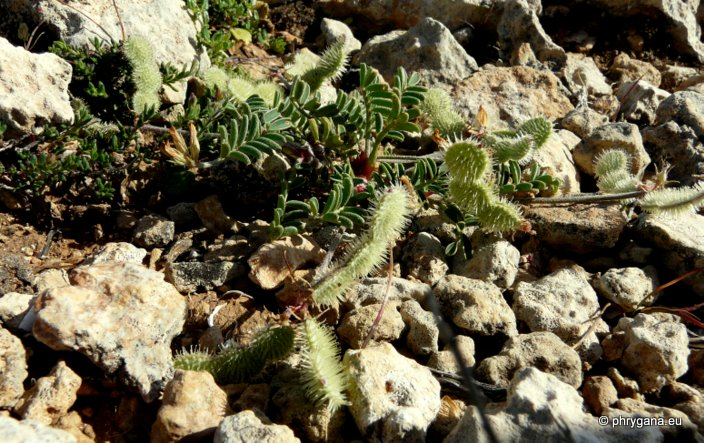
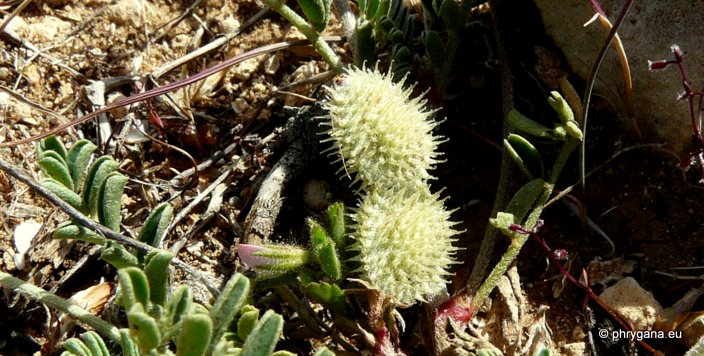
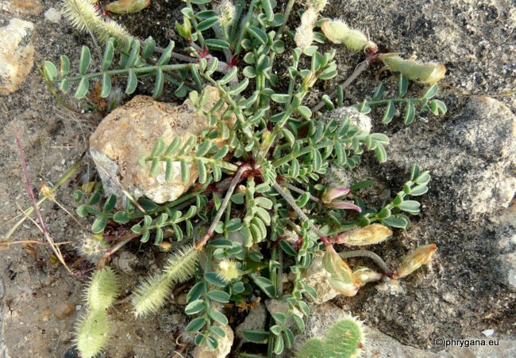
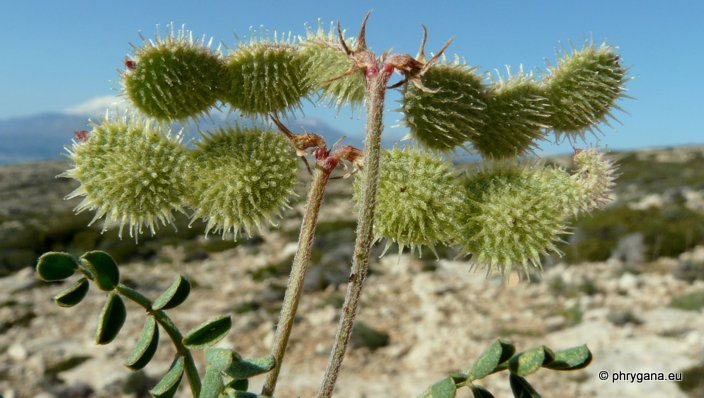

| PHRYGANA | Fauna | Flora | Galles | liste des espèces |
contact -
info - commentaires phrygana1 (at) gmail.com |
| Particularités crétoises | nouveautés | Mines | ressources naturelles |
| Hedysarum spinosissimum L. supsp. spinosissimum |
| 348 | Flora | FABACEAE LINDL. | Hedysareae | Hedysarum L. |
|
 Hedysarum spinosissimum Matala (Nisos) 12avril 2012 |
| Sainfoin épineux -- Kretischer Ebenholzstrauch | |
| Plante couchée-ascendante, poilue à peitits poils apprimés | |
| Feuilles: composées imparipennées ( 7 - 15 folioles); folioles allongées (5 - 12 mm), plus ou moins glabres à duveteuses | |
| Tige: poilue. | |
| Fleurs: groupées en petites grappes (en forme de têtes) de 2 à 10 fleurs, longuement pédonculées; corolle balnc rosé à rose (8 - 11 mm), presque 2 fois aussi longue que le calice | |
| Fruit: une gousse assez grande (20 - 30 mm), applatie, rétrécie entre les 2 - 4 graines, poilue, avec des des épines crochues recourbées | |
| Hauteur: 10 - 35 cm | Type biologique: chaméphyte frutescent |
| Floraison: mars avril | |
| Altitudes: 0 - 750 m | |
| Statut en Crète: endémique | |
| Biotopes en Crète: collines, phrygana, lieux rocailleux, substrat rocheux sableux). | |
| Distribution: région Méditerranéenne, Proche-Orient | |
| Espèce calciphile, héliophile. | |
|
 Hedysarum spinosissimum Matala (Nisos) 12avril 2012 |
|
 Hedysarum spinosissimum Matala (Nisos) 12avril 2012 |
|
 Hedysarum spinosissimum Matala (Nisos) 12avril 2012 |
| 05 mai 2012 |
| © paul fontaine -- © Phrygana.eu 2007 -- 2013 |